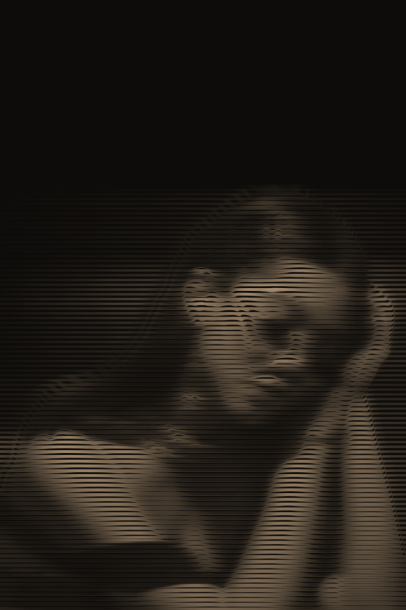

“the world exists because your mind exists. if your mind didn’t exist, there would be no world. as you look at these words, you see them in what appears to be a reality outside of you. what you are really seeing is the image that your mind is creating from the electrical signals being sent to your brain. while they may appear to be outside of you, this is an illusion, they exist within your own mind, and are being projected to appear as if they are outside of you. this apparent reality that is projected by our minds, is maya, and to believe that maya is the ultimate reality is a result of ignorance, or avidya in sanskri. because we feel ourselves to be separate from the world in which we live, we have also grown to feel quite alone in this world. our sense of loneliness and isolation not only makes us feel depressed and miserable, but it also causes us to be anxious and afraid of the world and everyone in it. because of this inherent fear, we put up all kinds of barriers to protect us from the world—barriers that we have created to keep us safe, but that really end up making us feel more alone, more miserable, and more afraid, as they prevent us from being our natural selves.”

Nadya Citra. dPUB 2020.